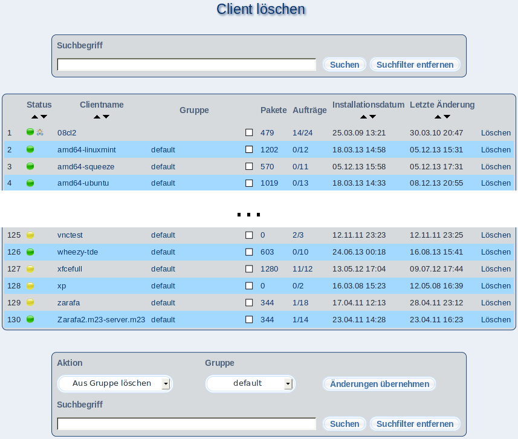

Um einen Client zu löschen, klicken Sie auf "Löschen". Im folgenden Dialog können Sie sich noch vergewissern, daß es sich um den richtigen Client handelt.
Klicken Sie auf den Clientnamen, erhalten Sie detaillierte Informationen zu dem gewählten Client und haben Zugriff auf das Kontrollzentrum.
Unterabschnitte
dodger
2012-11-22